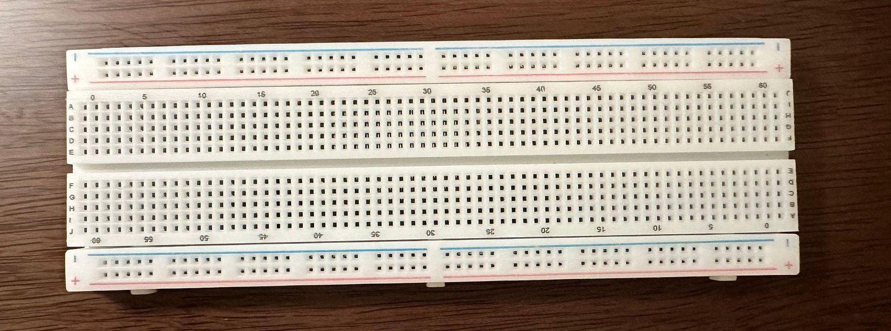
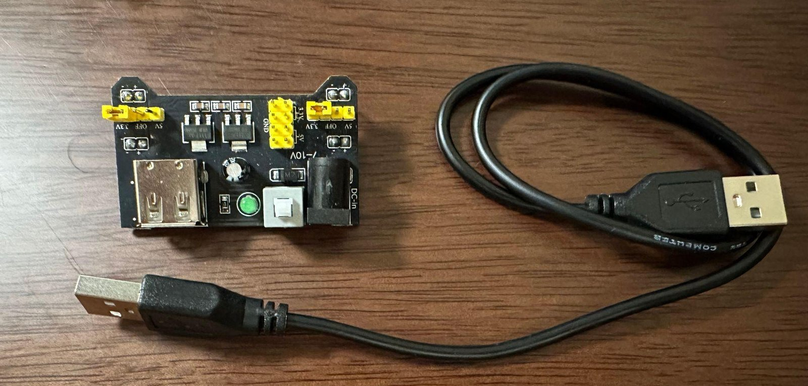
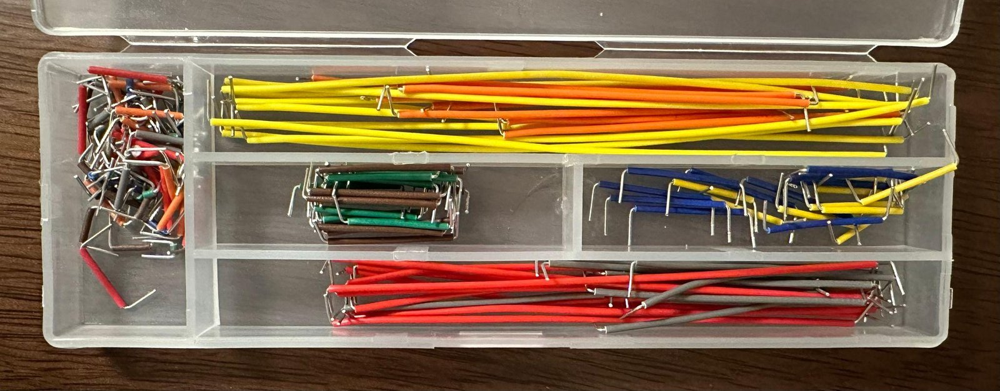
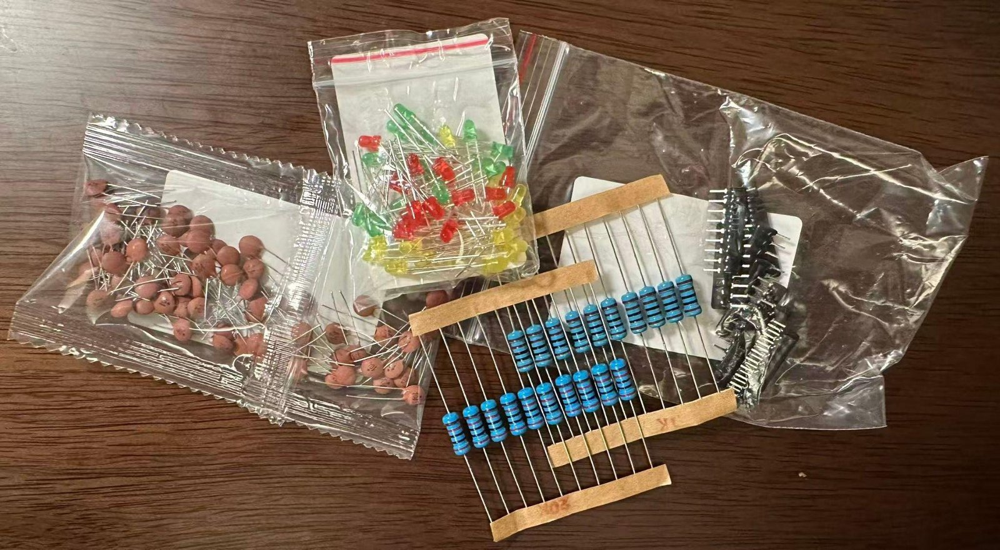
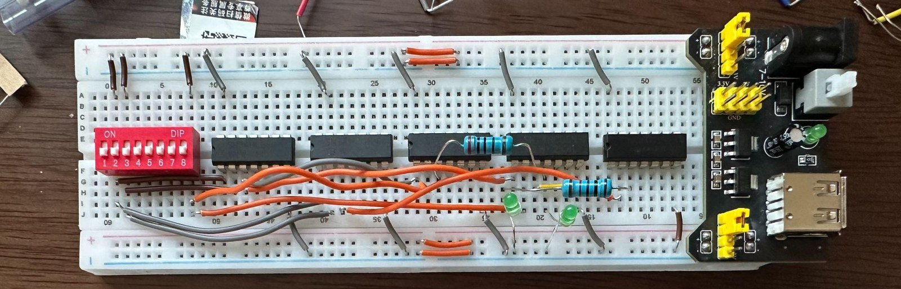
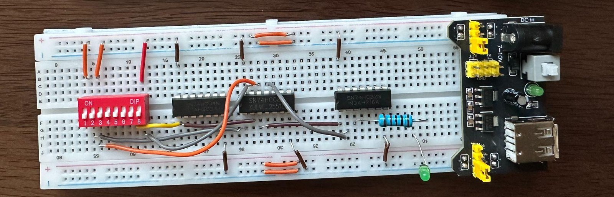
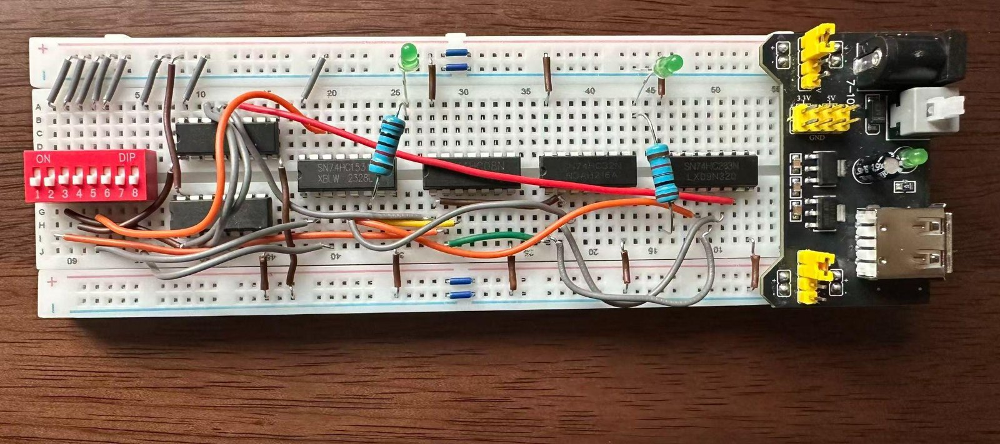

Undergraduate teaching assistant
I prototyped the digital-logic labs by buying the parts and building three units: a 1-bit full adder, a 2-to-1 multiplexer, and a 1-bit ALU. The gates are 74HC chips in DIP packages, so the pins go straight into a breadboard.
Parts
The breadboard, power module, jumper wires, resistors, LEDs, capacitors, and switches came from Taobao. The 74HC chips came from LCSC. An MB-102 board has 830 tie points. The module takes a USB supply and puts 3.3 V and 5 V on the rails.




1-bit full adder
A DIP switch sets two operand bits and a carry-in. XOR, AND, and OR gates (74HC86, 74HC08, and 74HC32) form the sum and the carry-out, and two LEDs show them. A 74HC low sits a little above ground, so the LED for 0 stays faintly lit.

2-to-1 multiplexer
A select bit chooses which of two inputs reaches the output. The board uses three chips: a 74HC04 inverter, a 74HC08 AND gate, and a 74HC32 OR gate.

1-bit ALU
The ALU puts an adder and two multiplexers on one board: a 74HC283, a 74HC157, and a 74HC153, with XOR, AND, and OR beside them. The DIP switch sets the operands and the operation. It uses the most chips of the three, and wiring it took about twice as long as the adder.

References
Public breadboard circuits I looked through while choosing these labs.